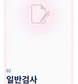
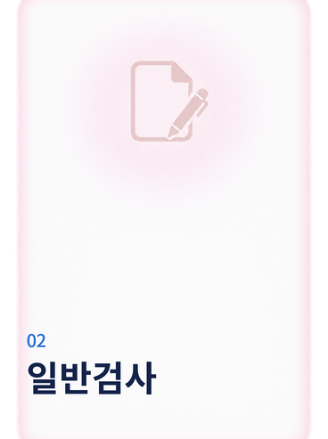
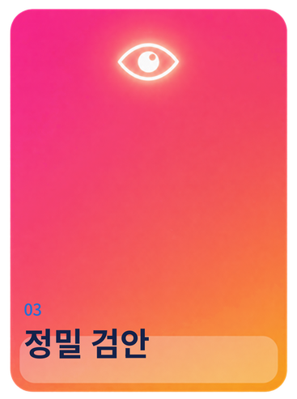
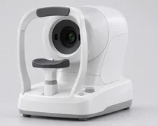
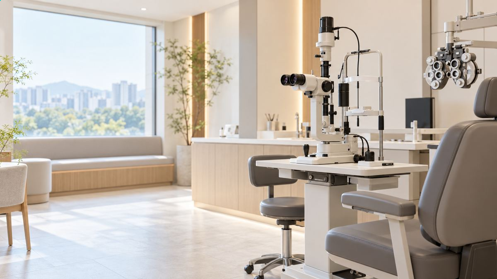
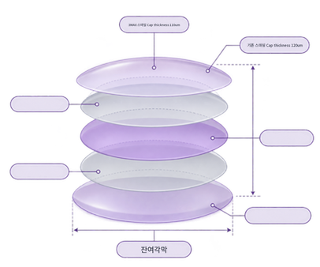
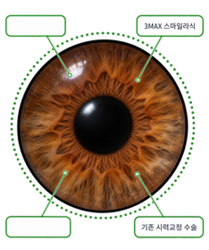

수술센터
smile lasik smile lasik smile lasik
손상과 부작용은 줄이고,
회복은 빠르게
라식과 라섹의 한계를 넘어선 3세대 시력교정술
 visumax
visumax
스마일 방식의 시력 교정이란?
비쥬맥스 장비로만 가능한 스마일라식 SMall Incision Lenticule Extraction은 각막에 약 2mm 안팎의 작은 절개를 만든 뒤 시력 교정에 활용하는 수술 방법입니다.
비쥬맥스 장비로만 가능한
스마일라식 SMall Incision Lenticule Extraction은
2mm 수준의
각막에 작은 절개를 내어
시력 교정에 활용하는 수술 방법입니다.
스마일 방식의 시력교정 순서
smile lasik process
스마일 방식의 시력교정 순서
-
1
레이저 조사
초정밀 펨토초 레이저로
각막 절편을 만들지 않고 각막 실질에 레이저를 적용합니다. -
2
약 2mm 크기의 작은 절개
절개 폭은 약 2mm로 두고
각막 표면을 절개합니다. -
3
각막 실질 제거
최소 절개창으로
각막 안쪽 렌티큘을 꺼냅니다.
시력교정술 방식별 비교
아이디자인으로 한 층 더
정교해진
스마일라식
기존 스마일라식 수술 과정
-
01
환자준비
-

02일반검사
-
03
수술진행
클리어뷰안과의
시력교정 수술 경험
-

-


아이디자인 수술의
적합성 재확인눈의 수차까지 재어
정교하게 맞추는 시력교정술기존 수차 분석보다 5배 정교한
맞춤형 라식의 차세대 버전으로
더 정교하고 또렷한 시력 교정이 가능합니다. -

아이디자인으로 또 한번의
진화를 더하다
시력교정 수술 경험
-

안정성 MAX Point1
진정한 환자맞춤은
'검사'에서부터맞춤형 검사 장비로 기존 수차 분석보다 5배 정교한
차세대 맞춤형 교정으로 더 정교하고 또렷한 시력을 찾을 수 있습니다.
또 수술에 필요한 검사를 한 번에 마치고, 눈의 데이터를 더 정확하게 분석합니다.맞춤형 검사 장비로 기존 수차 분석보다
5배 정교한 차세대 방식으로 더 정교하고 또렷한
시력 교정이 가능합니다. 수술에 필요한 검사는 한 번에,
눈의 데이터를 더 정확하게 분석합니다. -
잔여각막 MAXPoint2
더 세밀한 기술,
더 많은 각막 보존기존 시력교정술보다 각막 손상 범위가 작아 각막을 더
안전하게 지킬 수 있습니다. 손상 범위가 줄어 눈부심,
안구건조증 같은 부작용도 줄어듭니다.기존 시력교정술보다 각막 손상 범위가 작아
각막을 더 안전하게 지킬 수 있습니다.
손상 범위가 줄어 눈부심, 안구건조증 같은
부작용도 줄어듭니다.
-

정밀성 MAXPoint3
시력에 영향을 미치는
부분에만 레이저를!옵티컬 존은 레이저가 교정하는 각막 영역을 뜻합니다.
기존 방식에서는 실제 시야를 담당하는 광학부보다 더 넓은 범위에 레이저를 조사했습니다.
스마일 라식은 레이저 조사 범위를 옵티컬 존에 맞춰
각막 손상을 줄였습니다.옵티컬 존은 레이저가 교정하는 각막 영역을 뜻합니다.
기존 시력교정수술은 옵티컬 존보다
레이저 조사 범위가 넓었습니다.
스마일 라식은 레이저 조사 범위를 옵티컬 존에 맞춰
각막 손상을 줄였습니다.
스마일라식의 장점,
추천 대상자 Recommend
수술장비
정확한 검사로 수술의 완성도를 높입니다.
대학병원급 장비를 활용한
75가지 안 정밀검사
-
대학병원급
1
의료장비 및 검진 시스템 보유 -
연구하는 의료진,
2
국가공인 검안사를 통한
전문 검진 -
평균 21년 이상 안과전문의
3
크로스 체크 -
연령대별 세분화된
4
검진 프로그램 -
안질환 관련 외래 진료 및
5
치료 가능 -
아벨리노 각막이영양증
6
[유니버셜] 검사
유튜브 영상
PROCESS
smile lasik
보증서


평생관리 보증서 제공
스마일 라식에 대해 더 궁금하신가요?

-
Q.MORE
수술 후 바로 보이나요?
각막 표면을 넓게 벗기지 않는 방식이라 비교적 이른 시기부터 시력이 회복되는 편입니다. 이튿날 생활을 시작하더라도 선명도는 눈마다 다르며, 한두 주 동안 흐려 보일 수 있습니다.
-
Q.MORE
수술 후 통증이 없고 안 아픈가요?
작은 절개 교정은 점안 마취 후 진행하지만 눈이 시리거나 압박되는 감각이 있을 수 있습니다. 마취 효과가 줄면서 욱신거리거나 눈물이 나는 사람도 있습니다. 초기 몇 시간의 불편이 차츰 줄어드는 편이지만 아픈 정도와 회복 속도는 각자 다릅니다. 일상 복귀 가능 시점도 진료에서 확인해야 합니다. 안내받은 범위를 벗어나 통증이 심해지거나 시력이 갑자기 달라진다면 병원에 연락하세요.
-
Q.MORE
수술 뒤 진료는 몇 번쯤 받으러 와야 하나요?
작은 절개 교정 뒤에는 이튿날과 일주일 무렵에 먼저 상태를 확인하고 이후 한 달 간격으로 경과를 살핍니다. 세안 가능 시점과 방문 간격은 실제 상처와 회복 상태에 맞춰 안내합니다.
-
Q.MORE
수술 당일 샤워해도 되나요? 화장은 언제부터 할 수 있나요?
작은 절개 교정 뒤 세안과 샤워, 독서 및 피부 화장을 재개하는 시점은 안내받은 기준을 따릅니다. 눈 주변 화장은 보통 일주일 이후 상태를 확인해 시작합니다.
-
Q.MORE
수술 후 언제부터 운동이 가능한가요?
가볍게 몸을 움직이는 활동은 회복 상태에 따라 이튿날부터 검토합니다. 강한 운동은 보통 일주일 이후로 미루며, 실제 시작 시점은 눈 상태를 확인한 뒤 안내받으세요.
-
Q.MORE
시력은 어느정도 좋아지는 건가요?
대부분 1.0 이상의 시력이 나오고, 1.5까지 오르는 분도 계십니다. 클리어뷰안과는 검사 단계에서 파면 분석 장비로 눈을 더 세밀하게 측정하고, 그 결과를 바탕으로 수술합니다. 그래서 같은 시력이라도 더 선명하게 보이도록 하고, 안구건조증과 빛 번짐 같은 부작용을 줄였습니다.
-
Q.MORE
수술 시간은 얼마나 걸리나요?
진행 시간은 대략 십 분 안팎입니다. 자세와 시선을 유지하는 정도 등 진행 상황에 따라 더 짧거나 길어질 수 있습니다.
-
Q.MORE
수술 당일 보호자가 꼭 필요한가요?
스마일 수술은 통증이 적어 보호자가 꼭 함께 올 필요는 없습니다. 다만 그날은 운전할 수 없으니 대중교통으로 귀가해 주세요.
-
Q.MORE
수술 후 바로 보이나요?
각막 표면을 넓게 벗기지 않는 방식이라 비교적 이른 시기부터 시력이 회복되는 편입니다. 이튿날 생활을 시작하더라도 선명도는 눈마다 다르며, 한두 주 동안 흐려 보일 수 있습니다.